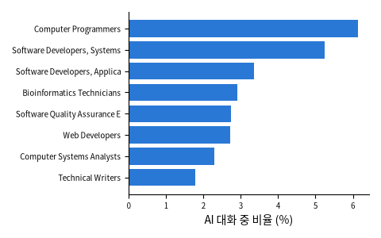

Anthropic (2025), Claude.ai 대화를 미국 O*NET 업무 목록에 대응시킨 공개 데이터 (Hugging Face Anthropic/EconomicIndex). O*NET 업무 설명 19,530개 포함

| task_name | pct |
|---|---|
| write marketing content for green product web sites, brochures, or other communi | 0 |
| document and communicate database schemas, using accepted notations. | 0.13 |
| teach classes and present self-help or information sessions on subjects related | 0.01 |
| create, populate, or maintain databases for tracking validation activities, test | 0.03 |
| type correspondence, reports, text and other written material from rough drafts, | 0.02 |
| conduct surveys and evaluate findings to determine if systematic discrimination | 0 |
| 열 | 종류 | 빈칸 | 고유값 수 | 범위 · 대표값 |
|---|---|---|---|---|
| task_name | 글자 · 범주 | 0 | 3514 | 가장 흔한 값: act as advisers to student org (0.0%) |
| pct | 숫자 | 0 | 609 | 0.001954 ~ 4.794 (평균 0.0285) |
소프트웨어 · 글쓰기 · 분석 쪽에 몰려 있다 (2025년 2월 공개분)
| ① 한 행 | 업무 하나 (O*NET task) 또는 직업 하나 |
| ② 입력 X | 업무 설명 · 직업 |
| ③ 출력 y | AI 대화 중 이 업무의 비율 (%) |
| ④ 평가지표 | 순위가 맞나 (상위 몇 개가 실제로 겹치나) |
| ⑤ 기준선 | 그 직업의 종사자 수 순서 |
문제를 정할 때 처음 채워 보는 칸들입니다. 여기서 끝이 아니라, 시험 데이터를 어떻게 나눌지 · 틀렸을 때 손해가 얼마인지 · 예측 시점에 정말 알 수 있는 값인지 같은 칸을 더 붙일수록 좋은 문제가 됩니다.
tasks with any AI use: 3514 / 18428
이 데이터는 하나의 정답 지표보다 분석 · 순위로 쓴다. 노트북의 '다른 문제로 바꿔 보기' 에서 지표를 직접 정해 보세요.
누가, 왜, 어떻게 만든 데이터인지 직접 확인해 보세요.
인턴 · 산학협력 · 프로젝트 주제를 고를 때 참고하세요 (일반적인 예시).